Luni, 07:45: o secție fără asistente
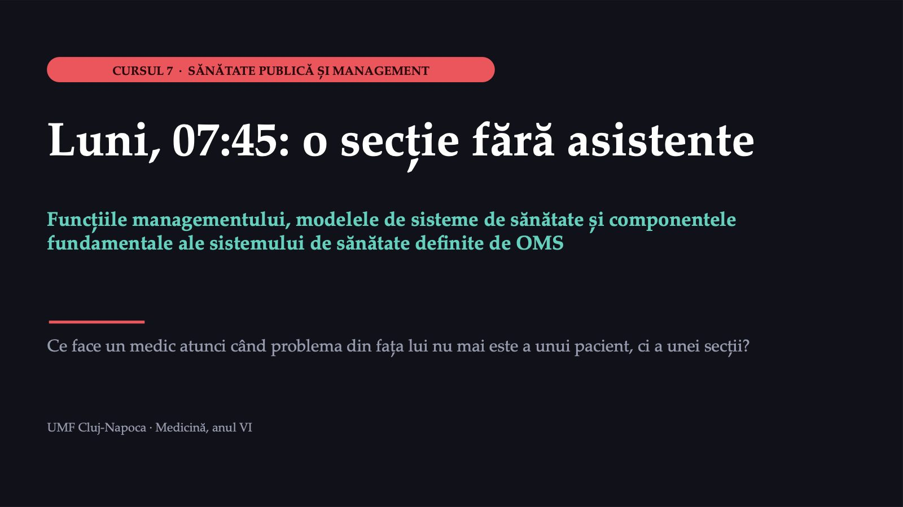
1 / 47Secția de medicină internă, luni dimineață
![ACTUL ÎNTÂI · SITUAȚIA Secția de medicină internă, luni dimineață SECȚIA 28 de pacienți internați la 30 de paturi; trei au nevoie de supraveghere atentă TURA DE ZI de obicei trei asistente; la 07:45, două au trimis certificate de concediu medical ZIUA patru internări programate, doi pacienți anunțați de la urgențe; tura următoare, la 14:00 Resursele umane nu au pe nimeni. Asistenta de noapte se oferă să mai rămână două ore. Caz construit pentru curs; detaliile sunt plauzibile, nu reale. Caz construit; valori ipotetice.](diapozitive/C07/002.jpg) 2 / 47
2 / 47La telefon, imediat după vestea absențelor
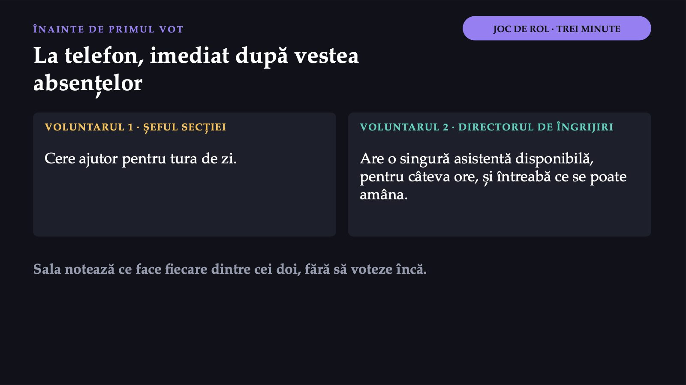
3 / 47Sunteți șeful secției. Ce faceți în primele treizeci de minute?
![MENTIMETER · VOTUL 1 PRIMA DECIZIE Sunteți șeful secției. Ce faceți în primele treizeci de minute? A Solicitați conducerii suspendarea internărilor, programate și din urgență, până după-amiază B Solicitați o asistentă din altă secție, reprogramați ce poate aștepta și împărțiți sarcinile C Lăsați asistenta de noapte să mai rămână două ore și preluați o parte din tratamente D Anunțați situația în scris managerului și așteptați decizia lui Vot individual, fără discuție. Răspundeți pe telefon, la codul afișat.](diapozitive/C07/004.jpg) 4 / 47
4 / 47Convingeți-l pe colegul care a votat altfel
 5 / 47
5 / 47Rezultate prin munca altora, cu resurse limitate
 6 / 47
6 / 47De la Fayol la cele patru funcții de azi
![FUNCȚIILE MANAGEMENTULUI De la Fayol la cele patru funcții de azi Activitățile prin care un conducător transformă resursele unei organizații în rezultate. Planificarea Organizarea Conducerea Controlul FAYOL previziunea, planificarea, organizarea, comanda, coordonarea și controlul UN MANUAL UNIVERSITAR RECENT patru funcții de bază; cursul le folosește pe acestea, iar conducerea ține locul comenzii și al coordonării Surse: Fayol, teoria generală a managementului; OpenStax, Principles of Management (manual universitar).](diapozitive/C07/007.jpg) 7 / 47
7 / 47Ce înseamnă fiecare funcție pe secție
![PE EXEMPLE DIN SPITAL Ce înseamnă fiecare funcție pe secție PLANIFICAREA necesarul de asistente pe anul următor; pe secție lipsește lista de înlocuire ORGANIZAREA cine face ce și cine răspunde; o asistentă mutată spre secția supraîncărcată CONDUCEREA motivează și comunică: ce se amână azi și de ce CONTROLUL compară rezultatul cu ce s-a propus: indicatori, auditul unui caz, analiza unei plângeri În aceeași dimineață, șeful secției organizează, conduce și notează ce trebuie planificat și controlat.](diapozitive/C07/008.jpg) 8 / 47
8 / 47Mintzberg: zece roluri, în trei categorii
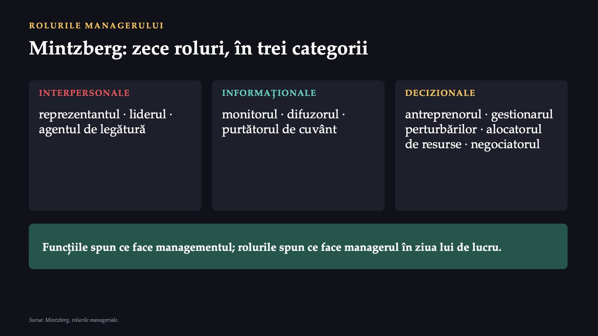
9 / 47Luni dimineață, șeful secției joacă patru roluri
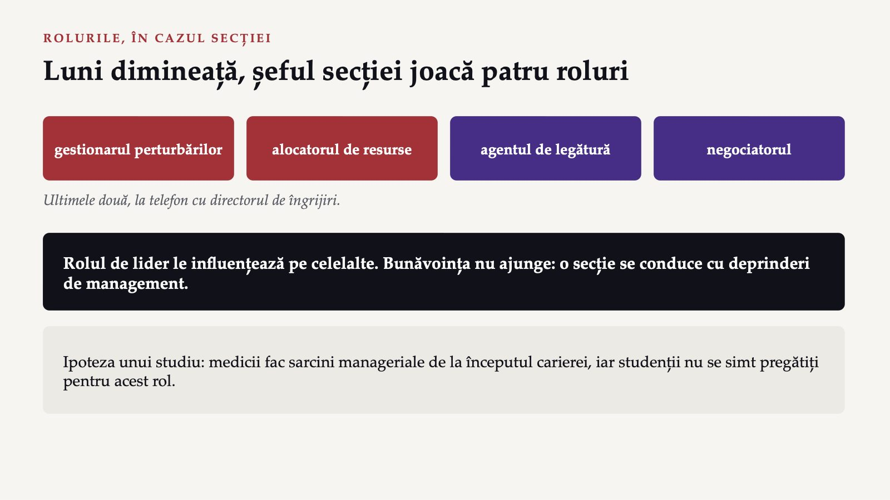
10 / 47Răspunsul apare după ședință
Răspunsul apare după ședință
Trei săptămâni mai târziu: problema nu este de luni
![ACTUL AL DOILEA · COMPLICAȚIA Trei săptămâni mai târziu: problema nu este de luni PERSONALUL unsprezece ture neacoperite în trei luni; două asistente plecate în străinătate PACIENTUL o plângere: tratament cu patru ore întârziere; trimisă și la direcția de sănătate publică CHIRURGIA ocupare de aproximativ 60%: blocul operator, în renovare BANII contractul nu crește; orele suplimentare au depășit bugetul INFORMAȚIA datele despre paturi și ture vin lunar, pe hârtie DECIZIA managerul convoacă comitetul director lărgit Caz construit pentru curs; detaliile sunt plauzibile, nu reale. Caz construit; valori ipotetice.](diapozitive/C07/012.jpg) 12 / 47
12 / 47Ce părea problema unei secții ține de tot sistemul
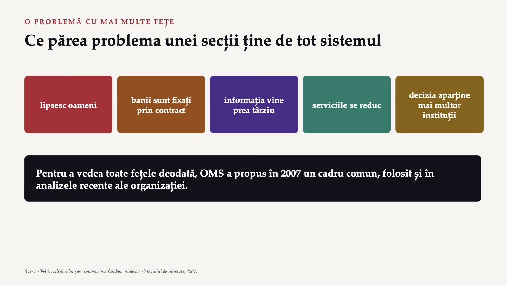
13 / 47Mai larg decât spitalul
 14 / 47
14 / 47Orice sistem, descris prin șase părți
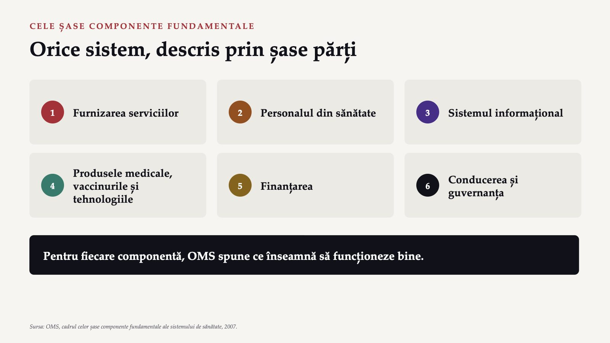
15 / 47Serviciile, personalul, informația
![CE ÎNSEAMNĂ „A FUNCȚIONA BINE” (I) Serviciile, personalul, informația SERVICIILE intervenții eficace, sigure, de calitate, când și unde e nevoie. România: sistem centrat pe spital. PERSONALUL suficient, distribuit echitabil, competent și receptiv. România: aproape 200 de localități fără medic de familie, în 2024. INFORMAȚIA informații fiabile și la timp. România: fără strategie clară, sisteme neinteroperabile. Surse: OMS, 2007; analiza sistemului de sănătate din România (OMS Europa și Observatorul European).](diapozitive/C07/016.jpg) 16 / 47
16 / 47Produsele, finanțarea, guvernanța
![CE ÎNSEAMNĂ „A FUNCȚIONA BINE” (II) Produsele, finanțarea, guvernanța PRODUSELE MEDICALE acces echitabil la produse esențiale sigure, eficace și cost-eficace, folosite rațional. FINANȚAREA fonduri suficiente și protecție de sărăcirea produsă de plata îngrijirilor. România: cheltuielile cele mai mici din UE (date din 2022). GUVERNANȚA cadre strategice, supraveghere, reglementare și răspundere. România: planificare insuficientă, reforme fragmentate. Surse: OMS, 2007; analiza sistemului de sănătate din România (OMS Europa și Observatorul European).](diapozitive/C07/017.jpg) 17 / 47
17 / 47Guvernanța, în formularea OMS
![CONDUCEREA ȘI GUVERNANȚA Guvernanța, în formularea OMS „Cadre strategice de politică, însoțite de supraveghere eficace, de construirea de coaliții, de reglementări și stimulente potrivite, de atenție la proiectarea sistemului și de răspundere.” Este numită și administrarea responsabilă a sistemului: supravegherea și orientarea lui de ansamblu. Prezentarea din anii trecuți atribuia definiția altor autori; textul este al documentului OMS din 2007. Sursa: OMS, cadrul celor șase componente fundamentale ale sistemului de sănătate, 2007.](diapozitive/C07/018.jpg) 18 / 47
18 / 47Componentele sunt mijloace, nu scopuri
![CE URMĂREȘTE UN SISTEM Componentele sunt mijloace, nu scopuri șase componente accesul · acoperirea · calitatea · siguranța patru rezultate SĂNĂTATEA nivelul ei și echitatea între grupuri RECEPTIVITATEA respectul pentru persoană și orientarea spre client PROTECȚIA împotriva riscului social și financiar EFICIENȚA eficiența îmbunătățită Mai multe asistente nu înseamnă tratament la timp, dacă sunt prost repartizate între secții. Sursa: OMS, cadrul celor șase componente fundamentale ale sistemului de sănătate, 2007.](diapozitive/C07/019.jpg) 19 / 47
19 / 47În Spitalul A, o singură criză atinge cinci componente
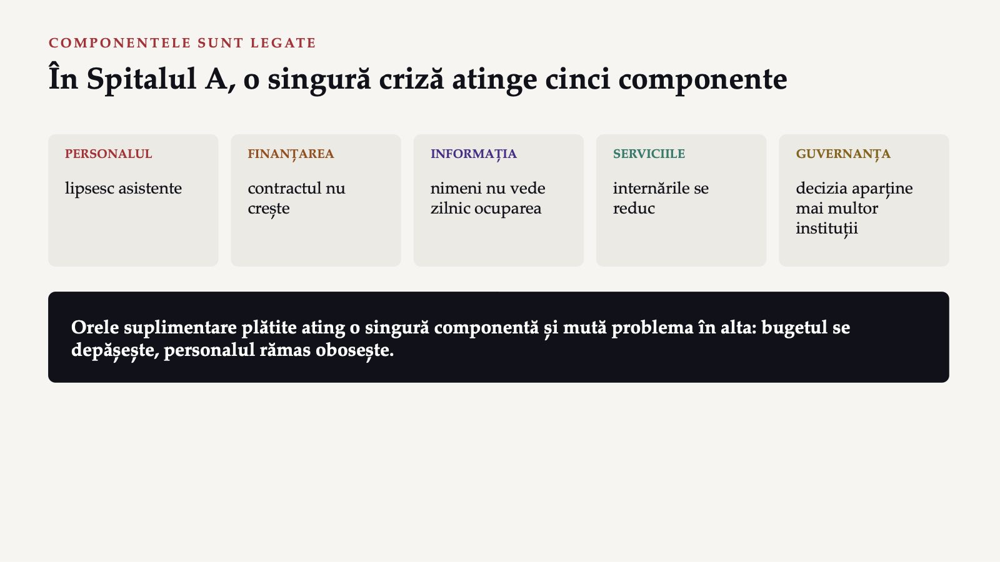
20 / 47Cine decide într-un spital public
![COMITETUL, ÎN LEGE Cine decide într-un spital public COMITETUL DIRECTOR · ART. 181 managerul, directorul medical și directorul financiar-contabil; în spitalele cu peste 400 de paturi, și un director de îngrijiri CONSILIUL DE ADMINISTRAȚIE · ART. 187 5–8 membri, numiți de minister sau de direcția de sănătate publică și de autoritatea locală; sindicatul, invitat permanent În caz, casa de asigurări, consiliul județean, sindicatul și pacienții sunt invitați la comitetul director. Sursa: Legea nr. 95/2006.](diapozitive/C07/021.jpg) 21 / 47
21 / 47Comitetul director lărgit al Spitalului A
![COMITETUL · COD QR PE RÂND INSTRUMENTUL ZILEI Comitetul director lărgit al Spitalului A RÂNDUL 1 Managerul spitalului [QR rol 1] RÂNDUL 2 Directorul medical [QR rol 2] RÂNDUL 3 Reprezentantul casei județene de asigurări [QR rol 3] RÂNDUL 4 Reprezentantul asociației de pacienți [QR rol 4] RÂNDUL 5 Liderul sindicatului [QR rol 5] RÂNDUL 6 Reprezentantul consiliului județean [QR rol 6] Fișa rolului · votul din rol · perechile · revotul · purtătorii de cuvânt Deschideți pe telefon fișa rândului vostru.](diapozitive/C07/022.jpg) 22 / 47
22 / 47Ce decide comitetul?
![MENTIMETER · VOTUL 2 A DOUA DECIZIE · DIN ROLUL RÂNDULUI Ce decide comitetul? A Închiderea temporară a unor paturi de medicină internă, până la ocuparea posturilor B Ore suplimentare plătite și angajări temporare, fără un termen de încheiere a măsurii C Mutarea voluntară, cu pregătire, a unor asistente de la chirurgie; recrutare pe un an, cu județul; turele neacoperite, urmărite lunar D O cerere de bani către casă și consiliul județean, fără alte măsuri Întâi rolul vostru, apoi votul. Răspundeți pe telefon, la codul afișat.](diapozitive/C07/023.jpg) 23 / 47
23 / 47Revotul și votul pe roluri
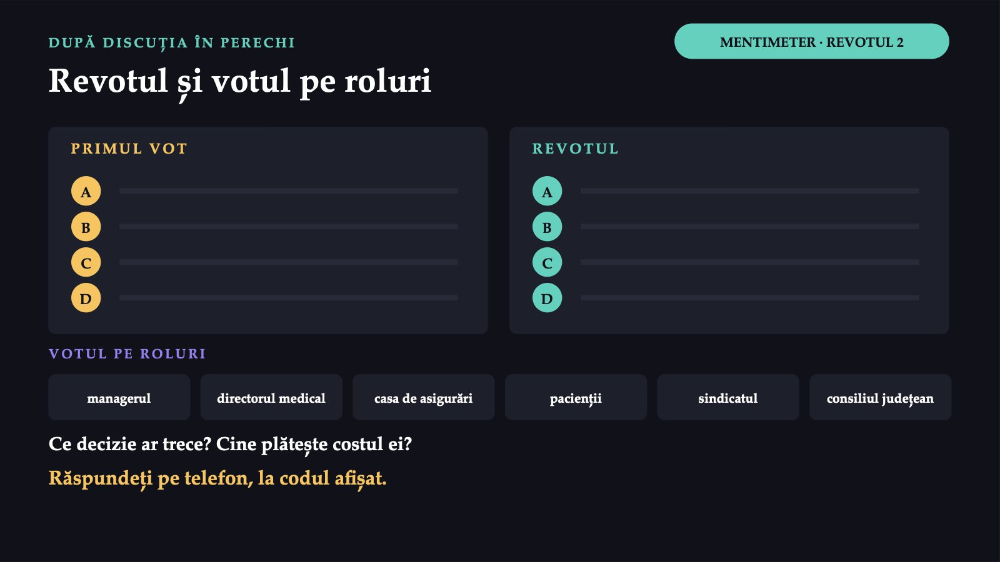
24 / 47Răspunsul apare după ședință
Răspunsul apare după ședință
De ce clasificăm sistemele de sănătate
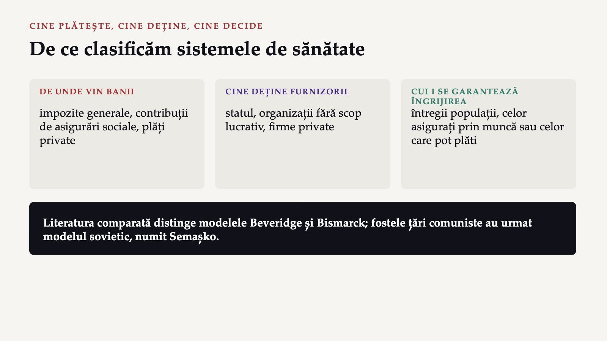
26 / 47Din impozite, pentru toată populația
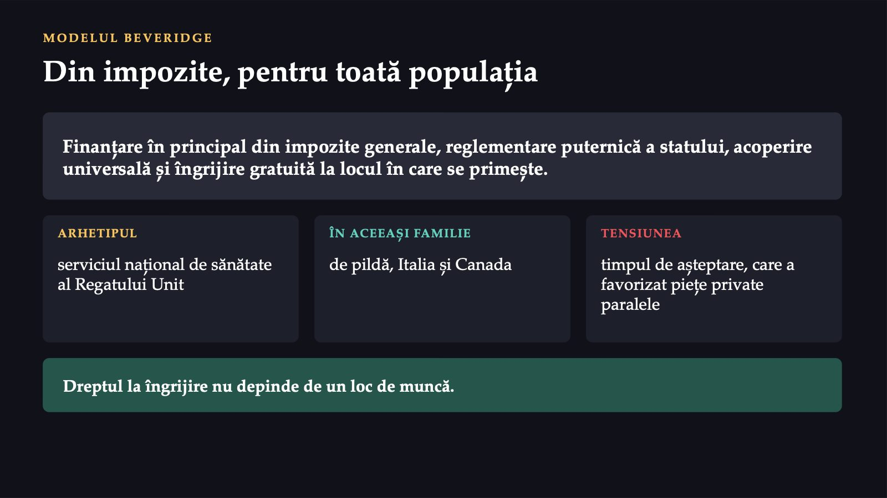
27 / 47Asigurări sociale, cu mai multe case
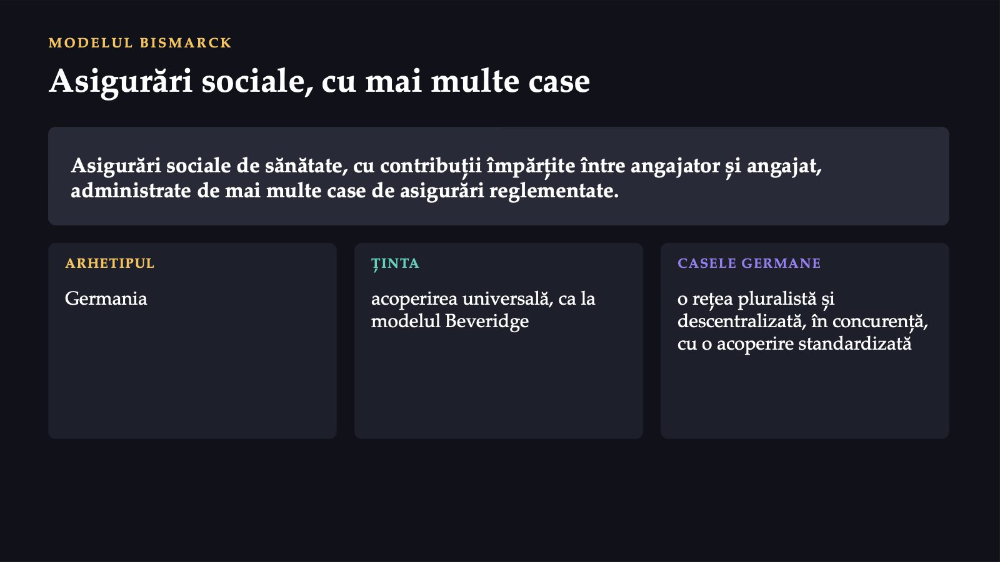
28 / 47Modelul sovietic, urmat de România
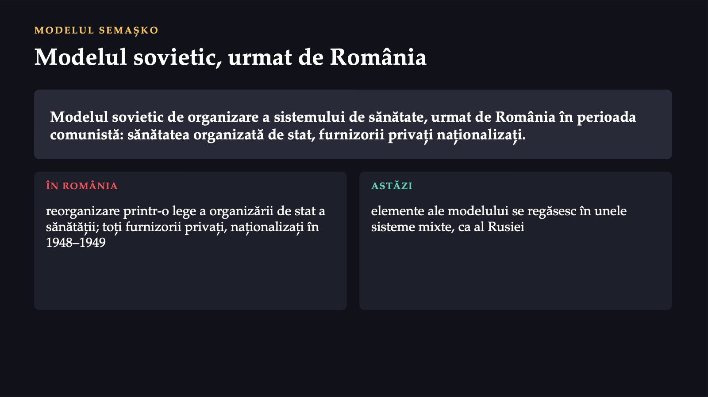
29 / 47Contează coerența, nu fidelitatea față de model
 30 / 47
30 / 47Drumul sistemului românesc, în șase pași
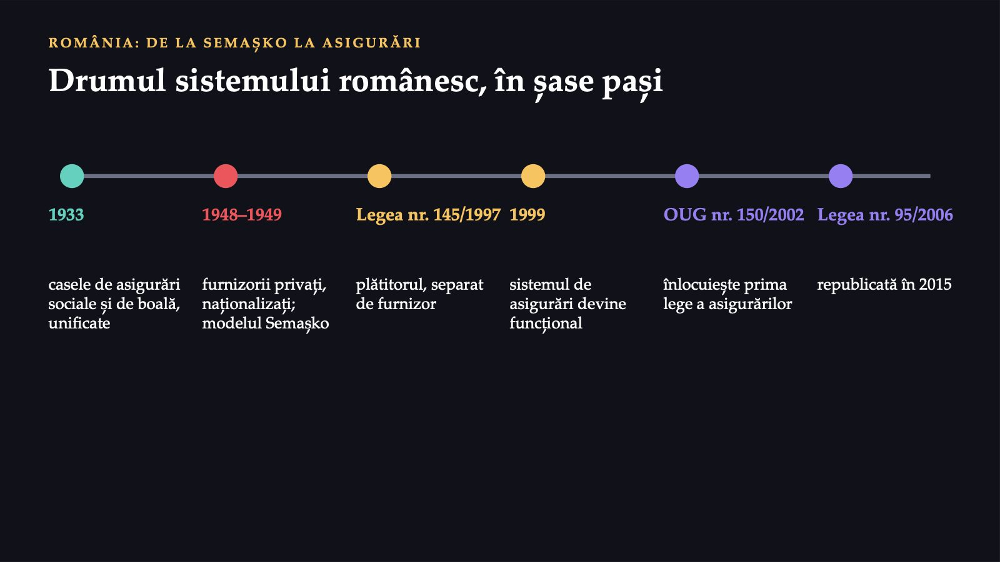
31 / 47Două niveluri, dar un sistem foarte centralizat
![ROMÂNIA ASTĂZI Două niveluri, dar un sistem foarte centralizat O SINGURĂ CASĂ NAȚIONALĂ contribuțiile, puse în comun la nivel central; casele județene cumpără servicii de la furnizori ALEGEREA PACIENTULUI pacienții își aleg liber furnizorul, la orice nivel de îngrijire MINISTERUL ȘI DIRECȚIILE autoritatea centrală și serviciile ei deconcentrate; institutul de sănătate publică dă îndrumare și indicatori CALITATEA ȘI SPITALELE autoritatea pentru calitate, din 2015; spitalele publice, ale ministerului sau ale autorităților locale](diapozitive/C07/032.jpg) 32 / 47
32 / 4789%
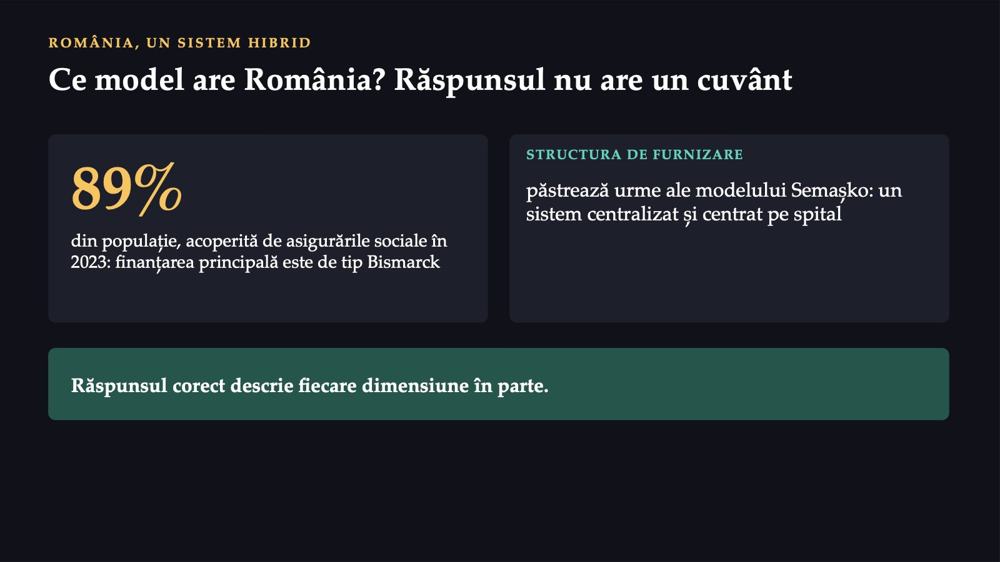
33 / 47Trei sisteme anonimizate
![MENTIMETER · VOT RAPID RECUNOAȘTEȚI MODELUL Trei sisteme anonimizate a un sistem vest-european de astăzi, finanțat din impozite generale, pentru toată populația, gratuit la locul îngrijirii b angajații și angajatorii împart contribuțiile, administrate de mai multe case de asigurări reglementate c asigurările sociale au înlocuit, la sfârșitul anilor nouăzeci, finanțarea de la buget; statul deține majoritatea spitalelor; plăți directe mari Pentru fiecare: Beveridge · Bismarck · Semașko · hibrid post-comunist Răspundeți pe telefon, la codul afișat.](diapozitive/C07/034.jpg) 34 / 47
34 / 47Răspunsul apare după ședință
Răspunsul apare după ședință
Răspunsul apare după ședință
Răspunsul apare după ședință
Răspunsul apare după ședință
Răspunsul apare după ședință
România și Uniunea Europeană, în 2024
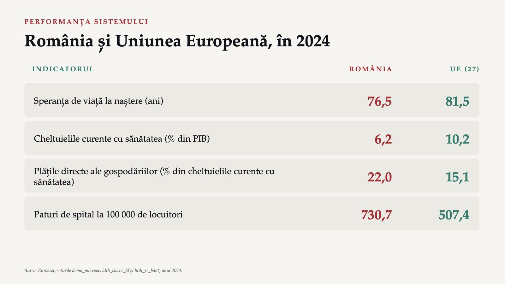
38 / 47Centrat pe spital și subfinanțat
 39 / 47
39 / 47Constatările, pe componentele cadrului
![ANALIZA SISTEMULUI ROMÂNESC Constatările, pe componentele cadrului SERVICII centrat pe spital; asistența primară, ocolită PERSONAL aproape 200 de localități fără medic de familie, în 2024 INFORMAȚIE fără strategie și interoperabilitate; date de calitate abia din 2022 FINANȚARE cheltuielile cele mai mici din UE; plăți directe de 21,4% în 2022 GUVERNANȚĂ planificare insuficientă; reforme fragmentate Plățile directe: 21,4% în analiză (2022), 22,0% în tabel (2024); anii diferă. Surse: OMS, 2007; analiza sistemului de sănătate din România (OMS Europa și Observatorul European).](diapozitive/C07/040.jpg) 40 / 47
40 / 47Aceeași criză, în alt sistem
![MENTIMETER · VOTUL 3 A TREIA DECIZIE · TRANSFERUL Aceeași criză, în alt sistem Finanțare din impozite; spitalele aparțin unei autorități regionale care le și finanțează; trimitere obligatorie de la medicul de familie. Cine poate rezolva cel mai bine problema? A Managerul spitalului, singur B Autoritatea regională, care deține și finanțează spitalul C O casă de asigurări care negociază contractul D Pacienții, prin alegerea altui spital Un singur vot, fără revot. Răspundeți pe telefon, la codul afișat.](diapozitive/C07/041.jpg) 41 / 47
41 / 47Răspunsul apare după ședință
Răspunsul apare după ședință
Zece întrebări, în ordinea cursului
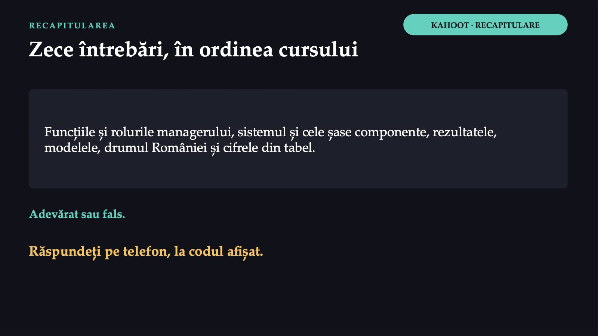
43 / 47Răspunsul apare după ședință
Răspunsul apare după ședință
De la două asistente absente la sistemul țării
![CE RĂMÂNE De la două asistente absente la sistemul țării 1 Luni dimineață, un șef de secție bun organizează și conduce; în săptămânile următoare, planifică și controlează. 2 Comitetul director poate combina oameni, bani, informație și servicii. 3 Deasupra spitalului rămân lipsa medicilor de familie, finanțarea limitată, plățile directe mari și guvernanța fragmentată. 4 Clasificarea modelelor răspunde la o întrebare: cine poate rezolva problema? Cadrul celor șase componente nu dă soluția; arată unde trebuie căutată.](diapozitive/C07/045.jpg) 45 / 47
45 / 47Ce faceți diferit pe secția dumneavoastră
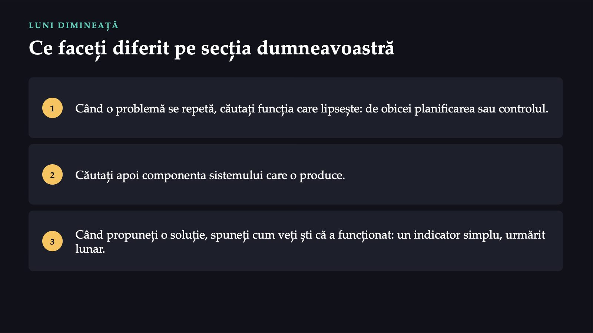
46 / 47Înainte să plecați
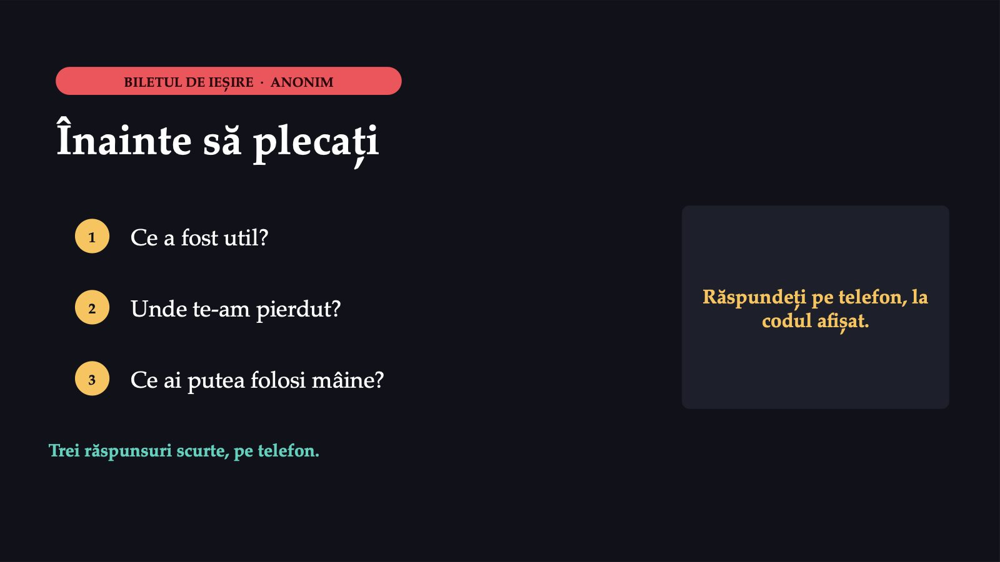
47 / 47Săgeți sau spațiu: navigare · O: vedere de ansamblu · N: notele prezentatorului · F: ecran complet · Esc: închidere